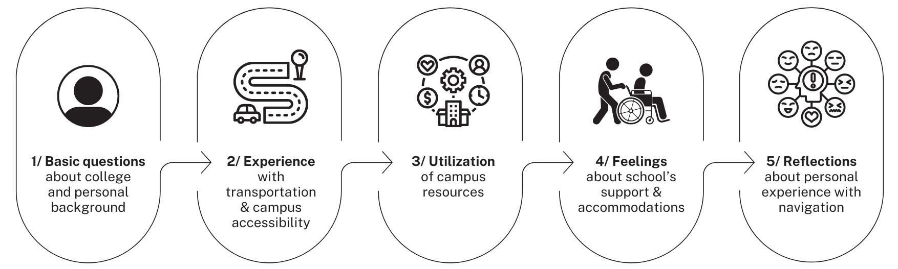
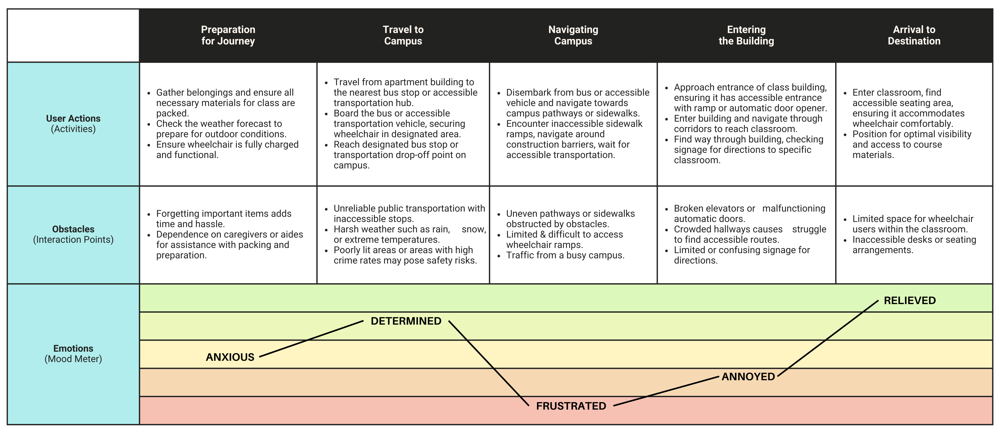
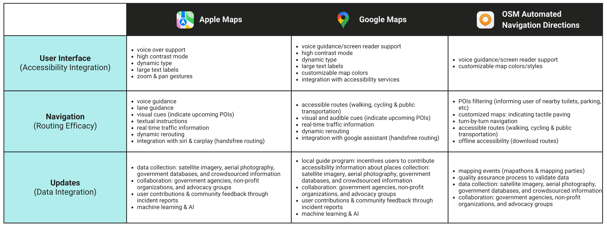
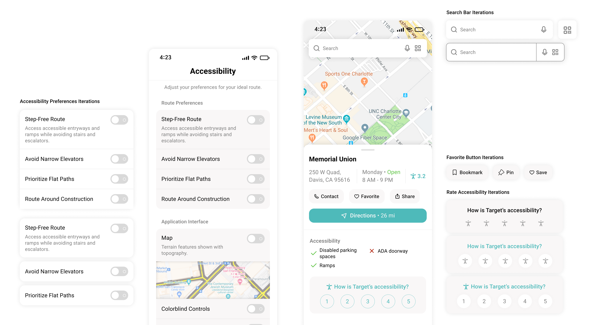

Buddy
Navigating Structural and Systemic Inequalities
Duration
Sep 2023 - Mar 2024
Team
Isha Tamrakar
Tools
Human-Centered Design, Prototyping, A/B Testing
PROJECT OVERVIEW
01
Students with disabilities face significant challenges when navigating existing structural and systemic inequities on college campuses. The lack of accessibility creates obstacles that impact their daily lives and college experiences. Issues such as inaccessible infrastructure, limited signage, transportation difficulties, and communication challenges can add up. This affects their ability to learn and perform, adding an extra layer of difficulty to an already challenging societal environment.
Target Audience
Defining the Affected Groups
They have the same goals as every student:
- attend classes on time
- participate in on-campus events
- study to pursue their careers
Pain Points
I conducted 13 interviews to gather insights into the experiences of individuals at UC Davis and understand how the university impacted their education. I highlighted the main pain points to empathize with their experience and identify obstacles hindering students from achieving their goals.
Unforseen Circumstances
Unforeseen accessibility issues, such as sudden elevator outages or construction blocking ramps, create unexpected challenges.
Preplanning Routes
Exploring the best possible route on campus becomes a premeditated task, often leading to dead ends and frustrating obstacles.
Busy Campus Life
Busy campus poses threats to their safety, with every person, bike, and car potentially becoming a hazard.
How might we design tools to enhance campus accessibility for students with disabilities, fostering inclusivity and support at UC Davis??
User Research
02
Interviews
Collecting Firsthand Accounts
I began my research by interviewing 13 students with disabilities to gather insights into their navigation challenges, providing firsthand perspectives on campus usability and accessibility. The interviews provided valuable qualitative data, helping me understand the students' experiences and preferences, and served as a foundation for grasping user context and empathy. I structured my interview questions as follows:
User Journey Map
Mapping the Student Journey: Navigating to Class with Physical Disabilities
After the interviews, I organized the feedback into a user journey map to highlight the various stages and emotions experienced by a student with physical disabilities traveling to a class on campus from their apartment. This map emphasizes potential challenges, accommodations, and strategies needed to navigate their journey successfully.
Competitive Analysis
A Comparision of Different Techniques
Next, I aimed to understand various accessibility approaches in existing popular navigation applications. Through conducting a competitive analysis, I was able to study best practices, innovative features, and potential gaps in these accessibility solutions. This analysis helped inform my app development process.
Synthesis
Findings & Highlights
Here were some of my top takeaways to incorporate into the final design:
🗣 Communication
Any temporary or permanent changes in accessibility are communicated clearly and promptly.
🛠 Customization
Adjust routes to accommodate specific needs, such as bathrooms and parking availability.
🧑🏾🦽 Inclusive Design
Design to accommodate various disabilities, including mobility, auditory, visual, and cognitive needs.
🤝 Support
Tools that allow professors to easily offer accessibility support.
Wireframing & Prototyping
03
Low Fidelity Sketches
Drafting A Potential Solution
Now that I had a grasp on the problem at hand and its effect on students, I began to draft potential ideas for my application. Additionally, I explored how to incorporate accessibility design considerations into my sketches. With these wireframes, I was able to visualize my ideas and realize essential features & make necessary improvements.
Wireflows
Improving Accessibility Flow in Application Development
Upon gaining clarity on the framework of my application I drafted my Mid-Fi screens and created wire flows to organize tasks. I decided which features could be grouped into which tabs to optimize the flow of one screen to the next. The following diagram illustrates the set of steps it would take the user to adjust their accessibility preferences & report a barrier.

Usability Testing
Conducting Usability Tests for Prototype Validation
I decided to conduct a usability test to ensure my prototype was following my goal of enhancing accessibility for students with disabilities. I asked users to perform a series of tasks on the prototype and explain their thought processes along the way. I also got general feedback on our choice of words, icons, clickability of buttons, sizing of icons, and overall design.
BUTTON = distracting, redundant
Users stated that they weren’t sure if clicking the report button meant they had to fill out the form right away or if it created a draft.
Consider:
How do we make this less overwhelming?
"Are the saved routes from any location?"
"What's the difference between saved routes and favorites?"
Consider:
Clarify start & end locations for saved routes
Indicate that Favorites are saved places
Change 'Save' to Download or Offline
Accessibility Iterations
Enhancing Mobile App Frameworks for Inclusive Design
After usability tests, I decided to redesign the accessibility and navigation page, focusing on areas that needed improvement. I was able to explore different solutions to improve accessibility and usability, tackling specific challenges revealed in the testing.
Final Design
04

Scan QR Code for Easy Access to Classroom Routes
Connect QR codes featured on flyers or emails to assist with wayfinding instructions.
Ensures students have access to clear and concise directions in various formats (text, audio, visual) for any classroom, even if it's difficult to locate.

Enhanced Navigation: Including Essential Stops and Personalized Route Modifications
Modify the route according to the presence of a companion or caregiver.
Identifying bathrooms and designated accessible parking spaces helps alleviate the stress of locating them, particularly in busy or unfamiliar locations.
Takeaways
05
Impact
Research: I didn’t have much prior knowledge about the accessibility issues on campus, but learning about the power of research and digging deep into the problem space helped me develop a more comprehensive solution. In the future, I want to build a diverse team that includes people with disabilities, involving them in the design process to truly capture their experiences.
Accessibility: Designing for accessibility is a complex endeavor. As someone who couldn't personally relate to the experience, I found myself heavily relying on interviews and additional research to adequately design for accessibility. It was challenging to step into the users' shoes, foresee potential obstacles, and create solutions through an application. Ultimately, it made me more empathetic and aware.